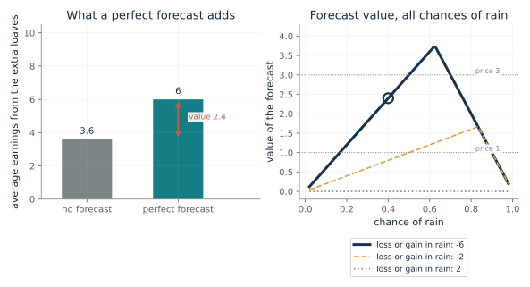
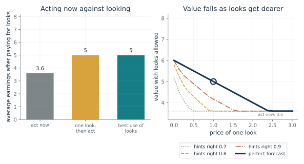
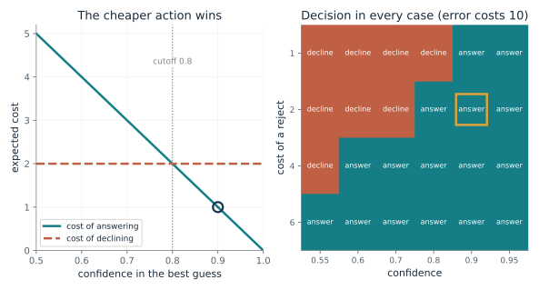
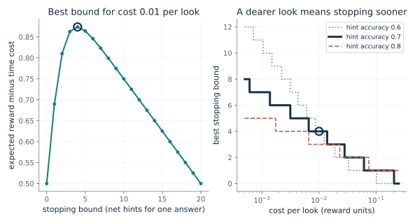
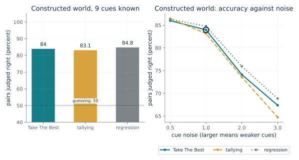
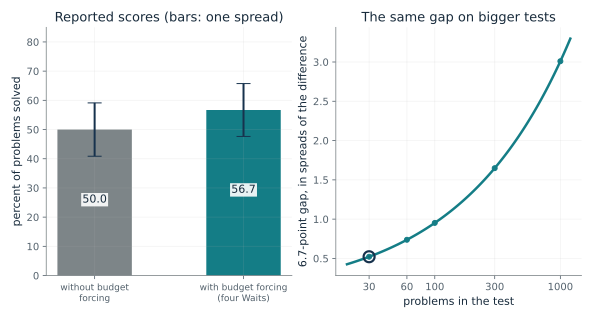

State the payoffs, the chance of each result and the price of a look. Compute what the look could change before paying for it, check whether it could change the best action at all, and remember that the price is supplied by a builder or a person and the benefit by a model that may leave something out. For a classifier, compute the cost of answering against the cost of declining at the confidence it actually has, and say whether that confidence is calibrated.
“My assistant keeps asking for more evidence before answering. Is another look worth its price, and who decides the price?”
Use mmi-ch19-spending-thought-wisely with the companion's AI skill package. The illustrations below also work on their own.
What is a forecast worth to a baker?
From Chapter 19, A look is worth how much it could improve the decision, minus its price
A baker earns 10 on a dry day and loses 6 if it rains. What is a perfect forecast worth, and what if a rainy day would still pay?
Without a forecast the baker bakes if the average is positive: 0.6 x 10 - 0.4 x 6 = 3.6. With a perfect forecast the baker bakes on dry days for 10 and skips on rainy ones for 0, averaging 6. The gain, 2.4, is the value of the forecast before its price. If baking paid even in the rain, the baker would bake either way and a forecast could not change a thing.
Predict first: Predict the value of the forecast if the extra loaves earned 2 in the rain instead of losing 6, however accurate the forecast.

Chance of rain: 0.4 · Earnings in the rain: -6
What happens: With a 0.4 chance of rain and a loss of 6, the baker earns 3.6 on average without a forecast and 6 with a perfect one, so the forecast is worth 2.4. At a price of 1 it is worth buying and at 3 it is not. Switch the rain payoff to 2 and the value falls to 0.
Without a forecast the baker's best average is 3.6; a perfect forecast lifts it to 6, so the forecast is worth 2.4. It is worth buying only at a price below that.
- Average earnings, no forecast
- 3.6
- Average earnings, perfect forecast
- 6
- Value of the forecast (VOC)
- 2.4
- Worth buying at price 1, at price 3
- yes, no
A system that gathers more information, computes more or samples again is spending something. Pricing the look against what it could change tells it when to stop.
Shenhav and colleagues (2013) proposed that a region called the dorsal anterior cingulate cortex works out how hard to try by weighing what effort is likely to bring against its cost. The chapter says this is a theory and review with no new experiment and no value-of-information formula.
In metareasoning, a computation is run only if its expected gain is worth its price. The formula is a specification of that rule; the chapter ties it to the expected value of control, and the model was checked against behavior, not against the cingulate.
Show the calculation
No forecast: max(0, 0.6 x 10 + 0.4 x (-6)) = 3.6. Perfect forecast: 0.6 x 10 + 0.4 x max(0, -6) = 6. VOC = 6 - 3.6 = 2.4.
The equations and symbols
- p
- the belief now, how likely each situation is
- x
- a result the look might show (here dry or rain), with chance P(x)
- p_x
- the belief after seeing x
- U*(p)
- the best payoff reachable from belief p
- VOC
- the value of computation: the gain before the price of the look
The price of a look is known and beliefs are revised correctly by Bayes' rule. The forecast is perfect here. The VOC is the gain before the price is subtracted, and looking pays when the gain exceeds the price.
Check your understanding: The chance of rain is 0.2 and rain costs 6. What is a perfect forecast worth?
Book source: Chapter 19, A look is worth how much it could improve the decision, minus its price. Illustration C19-D01. Formula. Book formula and the chapter's made-up baker: 10 if dry, minus 6 if rain, 0 if no extra loaves, chance of rain 0.4, giving 3.6 without a forecast, 6 with a perfect one and a value of 2.4. The changed case (2 in the rain) gives a value of 0. The other chances of rain and the rain payoff of minus 2 are this companion's variations. None of it is data.
When do several looks pay although the first does not?
From Chapter 19, A look is worth how much it could improve the decision, minus its price
The baker can buy hints about the weather one at a time. When is it worth paying for one, and for more?
The maximum compares two values. Acting now is worth the best average payoff at the current belief. Looking is worth paying c, then getting whatever the best continuation is from the belief after the hint. When one hint cannot flip the baker's decision, the first look looks worthless, but a second hint on the same side can push the belief far enough to skip baking on a day that is probably rainy.
Predict first: With hints right 0.7 of the time and a price of 0.2 per look, predict whether a planner that prices only one look would take any, and whether the best policy would.

Price of one look: 1 · Chance each hint is right: 1.0
What happens: With a perfect forecast costing 1, acting now is worth 3.6 and one look then acting is worth 6 - 1 = 5, so the model takes the look, as in the chapter. Now try hints right 0.7 at a price of 0.2: one look then acting is worth only 3.4, below 3.6, so a planner pricing only the next look declines. The best use of looks is worth 4.2, taking about 3.5 looks.
With looks costing 1 and a perfect forecast, acting now is worth 3.6, one look then acting 5, and the best use of looks 5. Taking looks pays.
- Acting now
- 3.6
- One look then act, minus its price
- 5
- Best use of looks
- 5
- Looks expected under the best policy
- 1
A planner that asks only whether the next look is worth its price can stop before discovering that a few looks together would change the decision.
The 2013 paper holds no such formula; Lieder and colleagues (2018) argued that choosing which computations to run is formally the metareasoning problem, and checked their model against behavior, not the cingulate.
This is a specification solved by working backward from the last allowed look. A builder supplies the price per look and the number of looks.
Show the calculation
V = max(U*, -c + sum over hints P(hint) V(next)) with at most 8 looks, U* = max(0, 10p - 6(1-p)) and a starting chance of dry 0.6. At the start U* = 0.6 x 10 - 0.4 x 6 = 3.6; V = 5.
The equations and symbols
- p
- the current belief that the day will be dry (0.6 to start)
- U*(p)
- the best payoff from acting now
- c
- the price of one look
- P(x | p)
- the chance the hint says x, and p_x the belief after it
- V(p)
- the best payoff when further looks are allowed
Known payoffs, a known price per look, hints that are right with the stated chance whatever the weather, Bayes' rule, and at most eight looks. The model needs specified payoffs, observation probabilities and costs. The chapter says when several looks can work together, the first look alone can understate their combined value.
Check your understanding: Acting now is worth 3.6, and one look costs 1 and leads to a final payoff of 6 on average. What does the equation take, and what is V?
Book source: Chapter 19, A look is worth how much it could improve the decision, minus its price. Illustration C19-D02. Formula. Book equation and the chapter's example: acting now is worth 3.6, and a look costing 1 that leads to an expected final payoff of 6 makes continuing worth 5, so the model takes the look. The perfect forecast is the setting 'a perfect forecast'; the noisy hints (right 0.7, 0.8 or 0.9 of the time), up to eight looks and the other prices are this companion's extension, with the same payoffs.
When should a classifier decline to answer?
From Chapter 19, A classifier could decline when answering costs more than handing the case on
A page reader costs 0 for a right reading, 2 for a reject and 10 for an error. At what confidence should it answer?
If the reader answers, it is wrong with chance 1 - q and each error costs 10, so answering costs (1 - q) x 10 on average. Declining costs a flat 2. The reader answers when the first is no more than the second. The test is the chance of being right, and a confident answer is kept.
Predict first: At a reject cost of 2 and an error cost of 10, predict the lowest confidence at which the reader answers.

Confidence in the best guess: 0.9 · Cost of declining (reject): 2
What happens: At confidence 0.7 answering costs 0.3 x 10 = 3, above the reject cost of 2, so the reader declines. At 0.9 answering costs 1 and it answers. The cutoff is 1 - 2/10 = 0.8.
At confidence 0.9, answering is wrong 0.1 of the time and costs 1 on average, against 2 for declining, so the reader answers. The cutoff is 1 - 2/10 = 0.8.
- Cost of answering
- 1
- Cost of declining
- 2
- Decision
- answer
- Confidence cutoff for answering
- 0.8
A system that always answers treats every error as free to hand on. Pricing the reject option says when to ask for help.
Chow's work measures no people.
A classifier that takes its best guess and its confidence can use this rule. The rule is derived for true probabilities, so a badly calibrated confidence makes the rule misfire.
Show the calculation
Answering costs (1 - 0.9) x 10 = 1. Declining costs 2. Cutoff = 1 - reject cost / error cost = 1 - 2/10 = 0.8.
The equations and symbols
- q
- the confidence that the best guess is right
- c_error
- the cost of a wrong answer (10 here); a right answer costs 0
- c_reject
- the cost of declining and handing the case on
- cutoff
- the confidence above which answering is cheaper than declining
A correct answer costs nothing, every error costs the same, and the stated confidence is a calibrated probability. A real system only estimates probabilities, and calibration across a group alone does not ensure the best decision if other known features predict which cases will be wrong. Chow's setting is machine recognition and measures no people.
Check your understanding: The reject cost is 4 and the error cost is 10. What is the confidence cutoff, and does a confidence of 0.7 answer?
Book source: Chapter 19, A classifier could decline when answering costs more than handing the case on. Illustration C19-D03. Formula. Chow's reject rule (1957, 1970) as the chapter states it, with the chapter's made-up page reader: a correct reading costs 0, a reject 2 and an error 10; confidence 0.9 answers (cost 1 against 2), confidence 0.7 declines (cost 3 against 2), and the cutoff is 0.8. The other reject costs and confidences are this companion's variations.
What price on time does a stopping point imply?
From Chapter 19, When to stop: a rising cost of time, and a model told to Wait
A chooser looks at hints one at a time and stops when one answer leads by a fixed amount. What cost per look makes that stopping point best?
A rule that stops at a bound B trades accuracy against time. A larger B makes a right answer likelier but needs more looks, each costing c. The best bound is where one more step of lead no longer buys more accuracy than it costs. Because the value of each bound is a straight line in c, each bound is best over a definite range of costs, and the ranges shrink as the bound grows.
Predict first: At a cost of 0.01 per look and hints right 0.7 of the time, predict whether the best stopping bound is closer to 1, to 4 or to 10 net hints.

Cost per look (reward units): 0.01 · Chance each hint is right: 0.7
What happens: At 0.01 per look with hints right 0.7 of the time, stopping once one answer leads by 4 net hints is best, with a 0.967 chance of a right answer after about 9.3 looks. Run backward, a chooser who stops at that bound behaves as if each look cost between about 0.0066 and 0.0137.
With hints right 0.7 of the time and 0.01 reward per look, stopping once one answer leads by 4 hints is best: chance 0.967 of being right after about 9.35 looks. Stopping there fits a cost per look from 0.00657 to 0.0137, a backward reading that goes beyond the paper.
- Best stopping bound (net hints)
- 4
- Chance the answer is right
- 0.967
- Looks expected before stopping
- 9.35
- Costs per look that make this bound best
- 0.00657 to 0.0137
The same equation serves both directions. Give a machine a price and it returns a stopping point; watch a stopping point and ask what price it behaves as if it paid.
Two monkeys and six people stopped on a random-dot task; Drugowitsch and colleagues recovered a cost of time that was neither zero nor constant and rose over a trial, more steeply in the monkeys. The cost is in units of the reward, inferred from a fitted model, not measured.
A builder can set a stopping point by hand, as budget forcing does in the next illustration. That is not a brain mechanism, and it shows the same trade-off.
Show the calculation
Value of bound B = P(B) - c x E[looks], P(B) = 1/(1 + rho^B), rho = (1 - a)/a = 0.429, E[looks] = B(2P - 1)/(2a - 1). At B = 4: 0.967 - 0.01 x 9.35 = 0.874.
The equations and symbols
- B
- the stopping bound: stop when one answer leads by B net hints
- a
- the chance each hint points the right way
- c
- the cost per look, in units of the reward for a right answer
- P(B)
- the chance the answer is right when stopping at bound B
- E[T_B]
- the average number of looks before stopping
Two equally likely answers, independent hints of the same accuracy, reward 1 for a right answer, 0 for a wrong one, and a constant cost per look. The studies found a cost of time that stayed almost flat at first and then rose, inferred from a fitted model, with only indirect evidence that the subjects maximized reward rate. The toy shows the logic of the inversion, not those results.
Check your understanding: With hints right 0.7 and cost 0.2 per look, is any look worth taking?
Book source: Chapter 19, When to stop: a rising cost of time, and a model told to Wait. Illustration C19-D04. Model. A toy built on the chapter's description of Drugowitsch and colleagues (2012): find the best stopping bound from the price of each look, and run the method the other way, from the stopping to the price. Their model used a diffusion process and dynamic programming on monkeys and people; this toy uses equally likely answers, hints of equal accuracy, a reward of 1 and a constant cost, with closed-form gambler's ruin formulas. All numbers are made up and the chapter says the backward price is an extension beyond the paper.
Can a rule that stops at the first deciding cue keep up?
From Chapter 19, A fixed rule can stop at the first cue that decides
Take The Best checks cues in order and stops at the first one that separates two objects. How does it compare with using every cue, in a made-up world?
Take The Best orders cues by validity and walks down the list until one cue separates the two objects, then stops. It ignores every later cue, so on most pairs it looks at only a few. When the first deciding cue is reliable, the later cues add little. When cues are noisy, weighing many of them can pay more.
Predict first: Predict whether the gap between Take The Best and a regression that weighs every cue stays small or widens a lot as the cues get noisier.

Cue noise (larger means weaker cues): 1.0 · Cues known: 9
What happens: In this constructed world at noise 1 with all nine cues, Take The Best judges 84.0 percent of pairs right against 84.8 for the fitted regression and 83.1 for tallying, while looking at about 2.9 cues per pair. The gap to regression grows only to about 1.4 points at noise 3. The chapter's real result, 65.8 against 65.7 percent, comes from different data.
In this made-up world with cue noise 1 and 9 cues known, Take The Best judges 84 percent of the 3,403 pairs right while looking at 2.94 cues on average; tallying gets 83.1 and regression, fitted to the true sizes, 84.8. A constructed simulation, not the paper's cities or a test of people.
- Take The Best (percent right)
- 84
- Tallying (percent right)
- 83.1
- Regression (percent right)
- 84.8
- Cues Take The Best looks at, on average
- 2.94
Stopping is also a design choice: a rule can stop by recipe rather than by pricing each look, and the chapter's examples show it can cost little accuracy in some settings.
Gigerenzer and Goldstein's contest was a computer simulation, not a test of people.
Take The Best is a fixed recipe: recognition first, then the most trusted cue that separates the pair. This simulation compares it with tallying and a fitted regression in a made-up world.
Show the calculation
Take The Best orders cues by validity (share of the pairs a cue separates where its holder is larger) and stops at the first cue that separates the pair; ties count one half. Seeded world (seed 1996): 83 objects, hidden size, nine cues with prevalences 0.5, 0.45, 0.4, 0.35, 0.3, 0.25, 0.2, 0.15, 0.1.
The equations and symbols
- x_aj
- whether object a has cue j (yes or no)
- validity
- of the pairs a cue separates, the share where the object holding the cue is larger
- tallying
- choose the object with more cues
- regression
- fit all cues to the true sizes and choose the larger predicted size
Ties count one half. The regression is fitted in sample to the true sizes, a strong rival. The cues track size with noise controlled by a setting. A simulation is a computation with disclosed seeds, never a measurement of people, and the paper's authors call their own result an existence proof that does not show simple rules win in general.
Check your understanding: If no cue separates a pair, what does the rule do, and how does this simulation score the pair?
Book source: Chapter 19, A fixed rule can stop at the first cue that decides. Illustration C19-D05. Simulation. Gigerenzer and Goldstein (1996) as the chapter reports it: 83 German cities, nine cues, 3,403 pairs, Take The Best 65.8 percent against a regression of 65.7, regression favored because it was fitted to the true sizes, 'an existence proof'. This is a different, constructed world built by this companion (83 objects, a hidden size, nine made-up yes-or-no cues of falling prevalence, seed 1996); it does not use the paper's cities or cues and does not reproduce its figures.
How big is two problems out of thirty?
From Chapter 19, When to stop: a rising cost of time, and a model told to Wait
A model scored 50.0 percent on a 30-problem math test, and 56.7 percent after budget forcing. How large is that gap, and how would it look on a bigger test?
A test with M problems moves 100/M points with each problem. A score at 50 percent, if each problem were an independent draw, would spread by 100 times the square root of 0.25/M points, which shrinks as the test grows. The chapter's gap is fixed at 6.7 points, so measured against that spread it looks larger on bigger tests.
Predict first: On a 30-problem test, predict whether a gap of two problems is larger or smaller than one spread of a single score at 50 percent.

Problems in the test: 30
What happens: On 30 problems one problem is 3.33 points, so the gap is about two problems. A score at 50 percent would spread by about 9.1 points if each problem were an independent draw, and the gap is about half a spread of the difference. The same gap on 1,000 problems would be about 3.0 spreads.
On 30 problems one problem is 3.33 points, so a 6.7-point gap is about 2 problems. If each problem were an independent draw at 50 percent, one score would spread by about 9.13 points, and the gap would be 0.521 spreads of the difference. This is a yardstick for scale, not a test of the paper's result, which compares the same problems.
- Points per problem
- 3.33
- Problems the 6.7-point gap is worth
- 2
- Spread of one score (points)
- 9.13
- Gap in spreads of the difference
- 0.521
A reported gain on a small test deserves a question about its size before a conclusion about its cause. The chapter itself adds that other tests gave smaller and mixed results.
No brain data are involved. The chapter contrasts this hand-set stopping rule with the fitted cost of time in monkeys and people, and says it is not a brain mechanism.
Budget forcing blocks the end-of-thinking marker and appends 'Wait' to make the model think longer. A builder sets the limit, the same for every question, whatever its difficulty.
Show the calculation
Spread of a score = 100 x sqrt(p(1 - p)/30) = 9.13 points at p = 0.5. Spread of a difference = sqrt(9.13^2 + 9.05^2) = 12.9. Gap/spread = 6.7/12.9 = 0.521.
The equations and symbols
- M
- the number of problems in the test (30 on AIME24)
- p
- the share of problems solved, 0.500 and 0.567
- sd
- the spread of a score if each problem were an independent draw at that rate, in points
The yardstick treats each problem as an independent draw at the reported rate and the two scores as independent. The paper's two conditions are scored on the same problems, so this is not its analysis and says nothing for or against the reported gain. Budget forcing combines length limits and forced continuations, every question got the same limits, and the gain flattened after about six Waits.
Check your understanding: On a test of 100 problems, how many problems is a 6.7-point gap?
Book source: Chapter 19, When to stop: a rising cost of time, and a model told to Wait. Illustration C19-D06. Reported result. Reported result: Muennighoff and colleagues (2025), s1-32B on AIME24, 30 problems, 50.0 percent without budget forcing and 56.7 percent with budget forcing and four Wait insertions; the chapter notes one problem is worth 3.3 points, so the gap is about two problems, that results on two other tests were smaller and mixed, and that the gain cannot be attributed to the word 'Wait' alone. The spread arithmetic and the bigger test sizes are this companion's yardstick.
Mathematical illustrations use the book's formulas with disclosed small examples. Each interactive choice shows a result computed from the same calculations as the chapter notebook. A simulation is not a measurement, and for a brain the mathematics is a model: a picture illustrates a result, and the assumptions determine its scope. Review copy, brain-computer partnership revision of 1 november 2026.